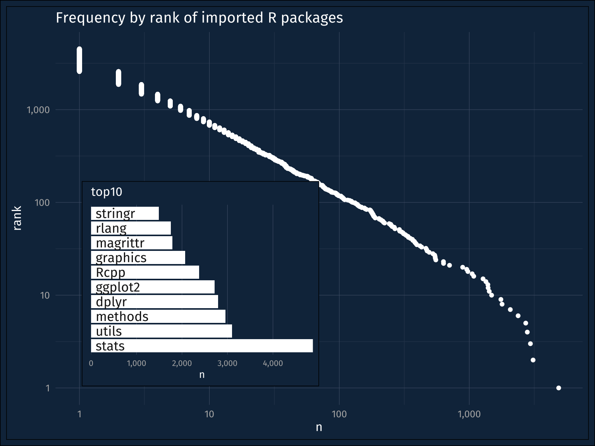
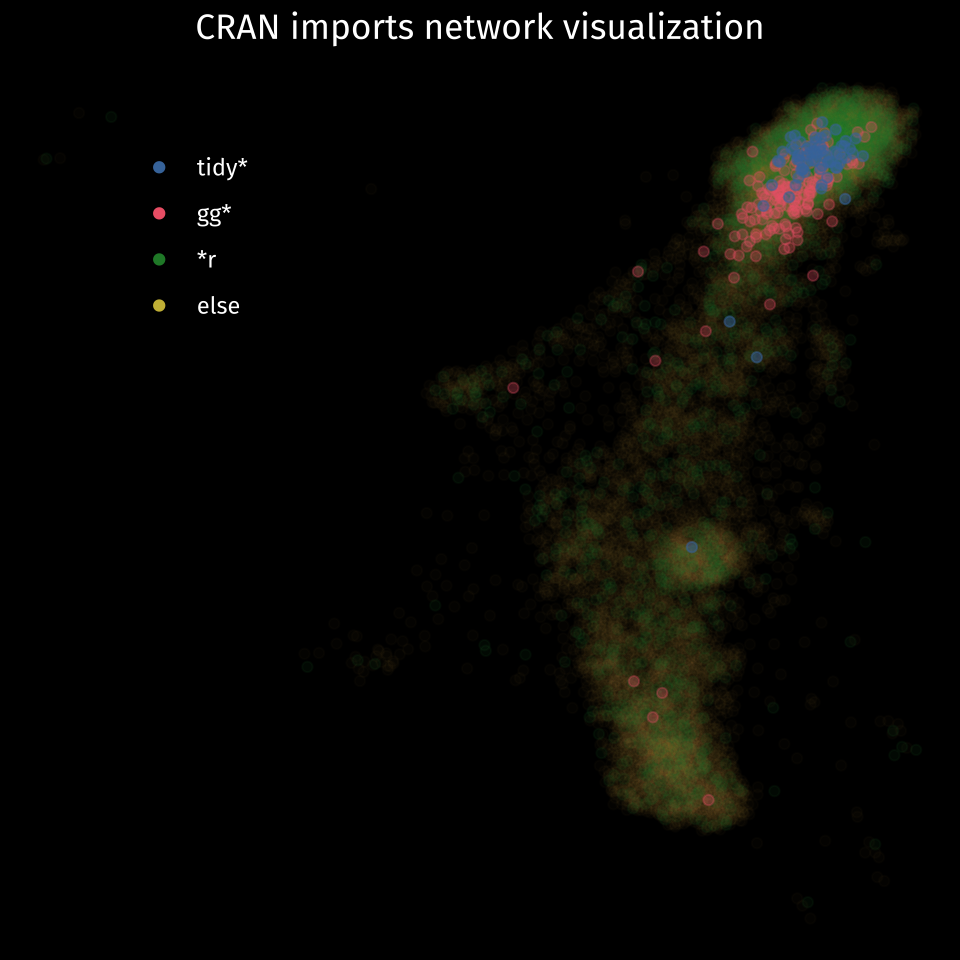

In the Spring 2023 semester, I’m going to be teaching two R intensive courses: a statistics for linguists course, and an R for the Arts and Sciences course. For both, I’m going to have to do a “What is R” discussion during week 1, and given the breadth of tools I hope students come away with, I’ve been rethinking my usual answers.
A programming language?
The Wikipedia slug for R says
R is a programming language for statistical computing and graphics supported by the R Core Team and the R Foundation for Statistical Computing
And yeah, it is definitely a programming language. Here it is doing some programming language things:
2+2[1] 42+2 < 5[1] TRUEAnd it can do statistical computing, like a linear model
Call:
lm(formula = dist ~ speed, data = cars)
Residuals:
Min 1Q Median 3Q Max
-29.069 -9.525 -2.272 9.215 43.201
Coefficients:
Estimate Std. Error t value Pr(>|t|)
(Intercept) -17.5791 6.7584 -2.601 0.0123 *
speed 3.9324 0.4155 9.464 1.49e-12 ***
---
Signif. codes: 0 '***' 0.001 '**' 0.01 '*' 0.05 '.' 0.1 ' ' 1
Residual standard error: 15.38 on 48 degrees of freedom
Multiple R-squared: 0.6511, Adjusted R-squared: 0.6438
F-statistic: 89.57 on 1 and 48 DF, p-value: 1.49e-12And it can do graphics.

Obviously, none of these things are unique to R. In the other programming language I know best, Python, you can fit a linear model and make a scatter plot. What differentiates programming languages, in my experience, is what kinds of operations, data structures, and workflows it prioritizes.
For R, I think it’s uncontroversial to say it prioritizes rectangular data with mixed data-type rows & single data-type columns and also provides a lot of options for indexing column-wise. And a lot of the extensions to R have leaned into this prioritization hard.
An ecosystem?
But “R” isn’t just a programming language, it’s also an ecosystem of community created packages. “Learning R” involves learning about these packages, and how they’re interrelated. I grabbed the list of all packages on CRAN and the packages they import with the crandep package.
cran_df <- crandep::get_dep_all_packages()If you count up how often each package gets imported and rank them, you get the familiar power-law plot. I’ve plotted this one out a bit non standard-ly so that frequency is on the x axis for both the main plot and the inset, and so that I could include the package names in the inset with horizontal text.
Plotting code
imported |>
ggplot(aes(n, rank))+
geom_point()+
scale_x_log10(labels = label_comma())+
scale_y_log10(labels = label_comma())+
labs(title = "Frequency by rank of imported R packages") -> mainplot
imported_10 |>
mutate(to = as.factor(to),
to = fct_reorder(to, rank)) |>
ggplot(aes(n, to))+
geom_col(fill = "white")+
geom_text(aes(label = to,
x = 0),
color = "grey10",
hjust = 0,
nudge_x = 100,
family = PLOT_FONT,
size = 4.5)+
scale_x_continuous(expand = expansion(mult = 0),
labels = label_comma())+
theme(axis.text.y = element_blank(),
text = element_text(size = 10),
panel.grid.minor = element_blank(),
panel.grid.major.y = element_blank())+
labs(y = NULL,
title = "top10") -> inset
mainplot + inset_element(inset, 0.05, 0.05, 0.5, 0.6)
Here’s a network visualization of these imports and dependencies. I color coded the nodes according to common R package naming trends
gg*- Packages extendingggplot2tidy*- Packages declaring their adherence to tidy-data principles (and the tidyverse more generally)*r- Packages declaring that they are… R packages
Network graph setup
imported |>
filter(n >= 5) |>
pull(to) -> to_network
cran_df |>
filter(!reverse, type == "imports",
to %in% to_network) |>
df_to_graph(nodelist = cran_df |> rename(name = from)) -> cran_network
set.seed(300)
cran_flat <- ggnetwork(cran_network, layout = with_drl())
xclip <- quantile(cran_flat$x, c(0.0025, 0.9975))
yclip <- quantile(cran_flat$y, c(0.0025, 0.9975))Network graph
cran_flat |>
mutate(name_pattern = case_when(str_detect(name, "[rR]$") ~ "thingr",
str_detect(name, "tidy") ~ "tidy",
str_detect(name, "^[Gg]g") ~ "gg",
T ~ "else"),
name_pattern = factor(name_pattern, levels = c("tidy", "gg", "thingr", "else"))) |>
arrange(desc(name_pattern)) |>
filter(x >= xclip[1], x <= xclip[2],
y >= yclip[1], y <= yclip[2]) |>
ggplot(aes(x = x, y = y, xend = xend, yend = yend, color = name_pattern))+
#geom_nodes()+
geom_nodes(aes(alpha = name_pattern))+
scale_color_bright(limits = c("tidy", "gg", "thingr", "else"),
labels = c("tidy*", "gg*", "*r", "else"))+
dark_theme_void()+
scale_alpha_manual(values = c(0.5,0.3, 0.08, 0.02),
limits = c("tidy", "gg", "thingr", "else"),
guide = "none")+
labs(color = NULL,
title = "CRAN imports network visualization")+
theme(legend.position = c(0.2,0.8),
legend.text = element_text(family = PLOT_FONT),
text = element_text(family = PLOT_FONT),
plot.title = element_text(hjust = 0.5))
A communications platform?
But beyond just the R packages that implement specific analysis or process data in a specific way, there are also all of the tools built around R (and mostly around the RStudio IDE) that also make R what I might call a “communications platform.” From Sweave to knitr to rmarkdown and now Quarto, the kind of literate programming you can do in R has moved from ugly1 Beamer slides to, well, full on blogs.
But, it’s not just for the novelty or nerd appeal that I think it’s important to learn about R authoring tools available. They’ve also changed my own discovery and learning process about new packages. You can always find the documentation for a package on CRAN, but you should really try to find its pkgdown site.2
What does it mean to “know R”?
When I think about what it means to “know R”, and my goal for the kind of knowledge my students should start getting a handle on, it involves all of these components: the programming syntax, the social graph of the ecosystem, and the authoring tools to use and seek out.
A lot of other programming languages have similar kinds of features, especially Python with pypi or conda keeping track of the ecosystem and Sphinx providing the authoring tools. There too I’d say that getting to “know Python” involves a lot more than learning its syntax.
Footnotes
Reuse
Citation
@online{fruehwald2022,
author = {Josef Fruehwald},
title = {What *Is* {R?}},
series = {Væl Space},
date = {2022-12-17},
url = {https://jofrhwld.github.io/blog/posts/2022/12/2022-12-17},
langid = {en}
}